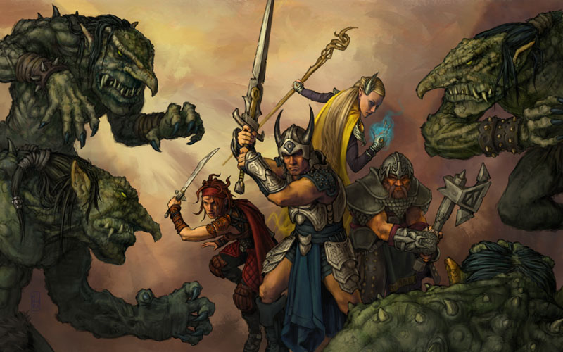
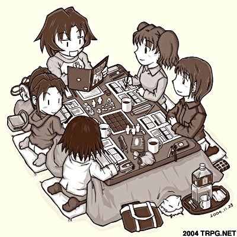
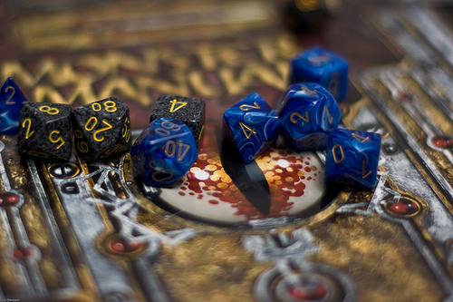
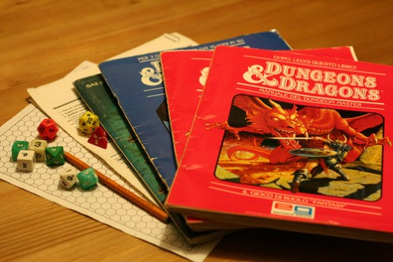

Role-playing game, também conhecido como RPG (em português: "jogo de interpretacao de personagens"),[1] é um tipo de jogo em que os jogadores assumem os papéis de personagens e criam narrativas colaborativamente. O progresso de um jogo se dá de acordo com um sistema de regras predeterminado, dentro das quais os jogadores podem improvisar livremente. As escolhas dos jogadores determinam a direção que o jogo irá tomar.

Os RPGs são tipicamente mais colaborativos e sociais do que competitivos. Um jogo típico une os seus participantes em um único time que se aventura como um grupo. Um raramente tem ganhadores ou perdedores. Isso o torna fundamentalmente diferente de outros jogos de tabuleiro, jogos de cartas colecionáveis, esportes, ou qualquer outro tipo de jogo. Como romances ou filmes, RPGs agradam porque eles alimentam a imaginação, sem no entanto limitar o comportamento do jogador a um enredo específico.

O RPG tem seu uso amplamente incentivado pelo Ministério da Educação (MEC)[2][3][4][5] como método de ensino. É usado para aguçar a cooperação mútua e o raciocínio lógico dos estudantes.

Obras estrangeiras publicadas no Brasil:

Robson Monteiro.
Fonte: Wikipedia.